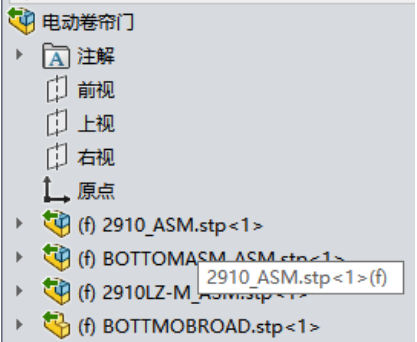
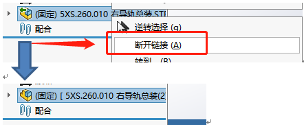
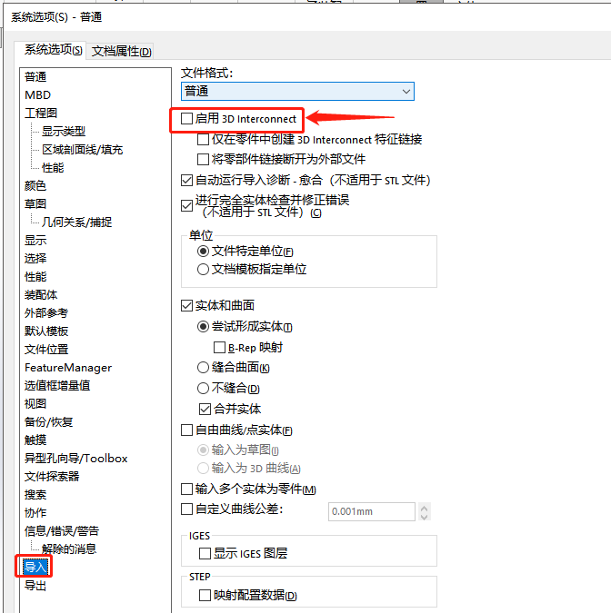

Step格式文件无法编辑
为什么打开 STEP 格式，保存到本地了还是没办法编辑。图中显示的零件的图标是开启了”3D interconnect”功能，是为了关联原格式（step）的设计信息，修改需要在原格式文件进行（在SW里是不能进行修改）。

方法 1：断开链接
你可以右键设计树需要编辑的零件，有个【解散特征】的选项。（解散特征是不可逆的）

方法 2：系统选项设置
或者是关闭【系统选项-导入-3D interconnect】功能，再打开 Step，使不关联原格式的设计信息，自己独立一份实体模型。
